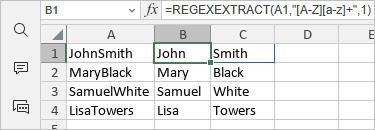

REGEXEXTRACT Function
The REGEXEXTRACT function is one of the text and data functions. It is used to extract text from a string based on a supplied regular expression pattern. The function can return the first match, all matches, or capturing groups from the first match.
Syntax
REGEXEXTRACT(text, pattern, [return_mode], [case_sensitivity])
The REGEXEXTRACT function has the following arguments:
| Argument | Description |
|---|---|
| text | The text string or reference to a cell containing the text from which you want to extract matching substrings. |
| pattern | The regular expression ("regex") that describes the pattern of text you want to extract. |
| return_mode | A number that specifies what strings to extract. It is an optional argument. If omitted, the default value is 0. The possible values are listed in the table below. |
| case_sensitivity | Determines whether the match is case-sensitive. It is an optional argument. If omitted, the match is case-sensitive (0). Enter 0 for case-sensitive matching or 1 for case-insensitive matching. |
The return_mode argument can be one of the following:
| Value | Description |
|---|---|
| 0 | Set by default. Return the first string that matches the pattern. |
| 1 | Return all strings that match the pattern as an array. |
| 2 | Return capturing groups from the first match as an array. |
Notes
When writing regex patterns, symbols called "tokens" can be used that match with a variety of characters. These are some simple tokens for reference:
- [0-9]: any numerical digit
- [a-z]: a character in the range of a to z
- [A-Z]: a character in the range of A to Z
- .: any single character
- *: zero or more of the preceding character
- +: one or more of the preceding character
- (): capturing group - used to capture and return parts of the match
Capturing groups are parts of a regex pattern surrounded by parentheses "(...)". They allow you to return separate parts of a single match individually.
The REGEXEXTRACT function always returns text values. You can convert numeric results back to numbers using the VALUE function.
If no match is found, the function returns a #N/A error.
How to apply the REGEXEXTRACT function.
Examples
The figure below displays the result returned by the REGEXEXTRACT function.
